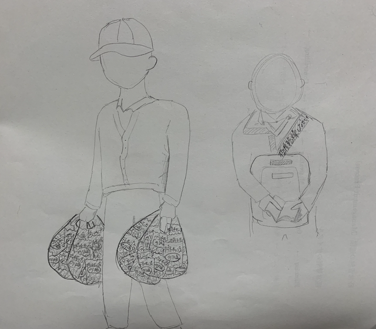

観察課題
◯スケッチ

右：襟元に「極度乾燥しなさい」と書かれた上着を着ているサラリーマン
観察日時：11月８日 8:30頃 観察場所：横浜市営地下鉄ブルーライン電車内
最初は会社で支給されているものかと思ったが、調べてみると「Superdry(極度乾燥しなさい)」というイギリスのブランドだった。
初めて見たブランドだったたが、個性的でいいなと思った。
左：ポテトチップスのり塩味がパンパンに入ったビニール袋を４つ持っていたおじさん
観察日時：11月３日 19:00頃 観察場所：横浜駅構内
なぜポテトチップスを大量に購入するのか、なぜのり塩味だけなのか、本当にその日にその量が必要だったのか、
謎だらけなところが面白いと感じた。